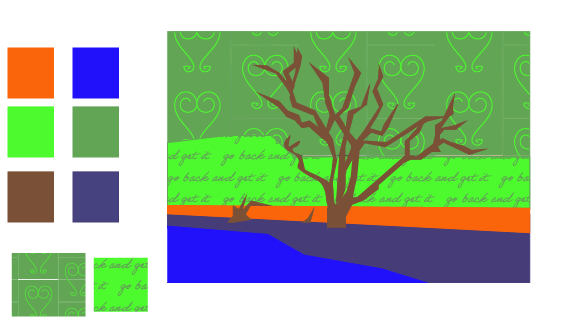

For this assignment I created an expressive eye illustration using only basic shapes and a limited color system. I built the eye using a variety of shapes and limited my design to use split complementary colors to push contrast and emotion. I chose an emotion and exaggerated the scale so the eye fills most of the artboard, making the expression readable even at a glance. I also organized my Illustrator file by naming layers and sublayers clearly, so it is easy to understand what each part of the eye does (iris, pupil, eyelid, highlight, etc.). I used the grid, rulers, and smart guides to keep edges aligned and curves intentional. After finishing, I exported the artwork as a PNG for the web.

For the illustrated environment, I started by importing a real photograph and placing it on its own template layer. I locked that layer so I could draw on top of it without accidentally moving the photo. I separated my illustration into foreground, middle ground, and background layers to keep the space readable and to help me manage details. I limited the entire piece to six colors chosen from a triadic palette, which forced me to simplify forms and rely on shape design instead of shading. I avoided Image Trace and manually built the environment using shapes and the pen tool so the final illustration feels intentional and designed rather than auto-generated. When the composition was complete, I exported the final illustration using Export for Screens.
